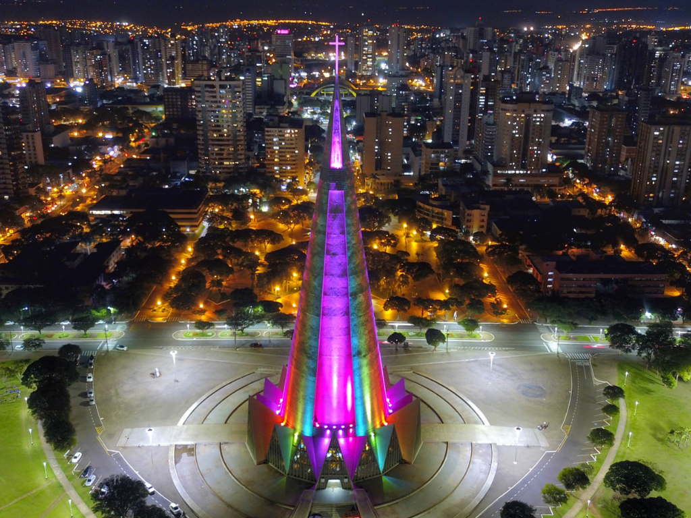

O Paraná é um estado localizado na região Sul do Brasil, conhecido por sua diversidade cultural, forte economia e belas paisagens naturais. Sua capital, Curitiba, destaca-se pelo planejamento urbano e pela qualidade de vida. O estado possui grande importância na agricultura e na indústria, sendo um dos maiores produtores de soja, milho e carnes do país. Além disso, o Paraná abriga atrações naturais famosas, como as Cataratas do Iguaçu, consideradas uma das maravilhas naturais do mundo. A população paranaense é formada pela influência de diversos povos, como italianos, alemães, poloneses e ucranianos, o que contribui para a rica cultura, culinária e tradições da região.
